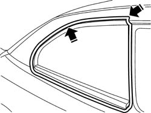
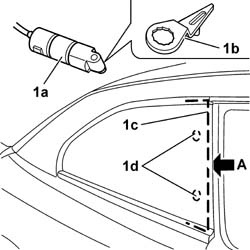
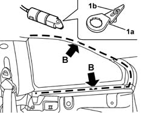
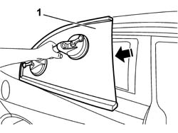
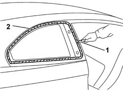
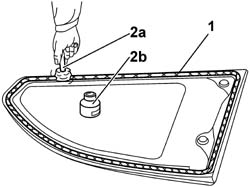
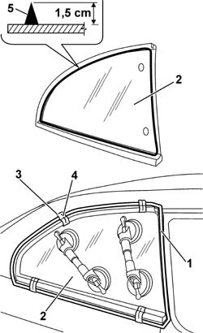
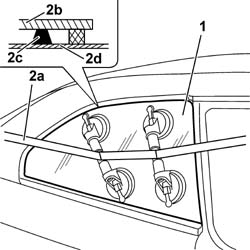

7035C14 FIXED REAR SIDE WINDOW ONE LH OR RH R R INCLUDES CLEANING OF HOUSING
- Path
- Procedures > 70 FITTINGS > 7035 BODYSHELL WINDOWS > 7035C PASSENGER COMPARTMENT SIDE FIXED WINDOWS > 7035C14 FIXED REAR SIDE WINDOW ONE LH OR RH R R INCLUDES CLEANING OF HOUSING
- Kind
- repair procedure (removal / refitting; the operation number is the code)
- Applies to
- all engines; all production periods
- Interactive page
- https://sloeber94.github.io/elrnDB-aGt/en/#/125001847
Applies to: all engines; all production periods
 Removing
Removing
 Refitting
RefittingOp. 7040L40 REAR COMPARTMENT SCUFF STRIP - R R
Op. 7050A22 REAR SEAT CUSHION - R+R
Op. 7050A14 SPLIT REAR SEAT ASSEMBLY - R+R
1. Apply a double layer of adhesive tape to protect the edges of the bodywork along the entire perimeter of the window glass in the inner and outer areas of the vehicle.

Applies to: all engines; all production periods
Use a vibrating knife to cut the bead of sealant for the side window; proceeding as described below.
1. Use a vibrating knife (1a), with a long flat blade (1b), and cut the bead of sealant (1c) along the side section (A) of the rear window, working from outside the car. During cutting, be careful with the window's centring pins (1d).

Applies to: all engines; all production periods
1. Fit the short flat blade (1a) and cut the bead of sealant along the lower and upper section (B) of the side window working from inside the car. Position the blade on the pin (1b) to avoid damaging the remaining inner trims fitted on the vehicle.

Applies to: all engines; all production periods
1. Fit the suction pads on the side window, then remove it.

Applies to: all engines; all production periods
Refitting
Removing1. Using a suitable tool, cut and smooth off the bead of sealant in the side window frame, so as to leave a thickness of between 0.25 and 1 mm, without scratching the paintwork. The sealant left in the frame will act as a backing for the new bond.
2. Clean the side window seating carefully with compressed air and thoroughly degrease with heptane. If glueing takes place 60 minutes after cutting and smoothing the bead of sealant, treat the sealant surface with the specific activator and wait 15 minutes before fixing the window.
 | Type | Component | Name | Qty. |
|---|---|---|---|---|
2 | PUR activator | WINDOW HOUSING | - | - |
Touch up the paintwork if necessary.

Applies to: all engines; all production periods
1. Degrease the screen-printed edge of the new window using heptane.
2. Using the swab (2a) supplied in the kit, apply the glass adhesion promoter (primer) (2b) on the printed perimeter.

Applies to: all engines; all production periods
1. Remove the adhesive tape from the edges of the bodywork along the perimeter of the side window.
2. Test fit the window and centre it perfectly, with the side doodr closed and insert the centering pins.
3. Once the window is centred, mark the reciprocal positions of the window and seating, with strips of adhesive tape.
4. Cut the strips of adhesive tape and remove the window.
5. Use an air gun to extrude a bead of sealant as evenly as possible along the edge of the window (immediately inside the edge of the seal).
| Type | Component | Name | Qty. |
|---|---|---|---|---|
5 | Window bonding sealant | FIXED SIDE WINDOW. | Product n. 71711976 | - |

Applies to: all engines; all production periods
1. Position the window in its seating immediately after applying the sealant, fitting the centering pins and bed it into position.
2. Fit the belt (2a) as shown in the figure and tension it so as to apply even pressure over the entire window, in order to ensure a perfect match between window (2b), sealant (2c) and window frame (2d).

Applies to: all engines; all production periods
Before refitting the interior components of the car, check that there are no leaks by carrying out a water test.
Op. 7050A14 SPLIT REAR SEAT ASSEMBLY - R+R
Topics linked from this page (4)
- 7040H50 REAR PANEL - R R
- 7040L40 REAR COMPARTMENT SCUFF STRIP - R R
- 7050A14 SPLIT REAR SEAT ASSEMBLY - R+R
- 7050A22 REAR SEAT CUSHION - R+R